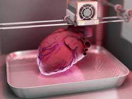

| Opinión | |
| Los órganos artificiales nos regalan esperanza ya que se podrá salvar vidas sin embargo esto aún no es cien por ciento posible ya que aún faltan más experimentos, tecnología más específica, más tiempo y más información para que la gente se aliente a probar esta terapéutica. |  |